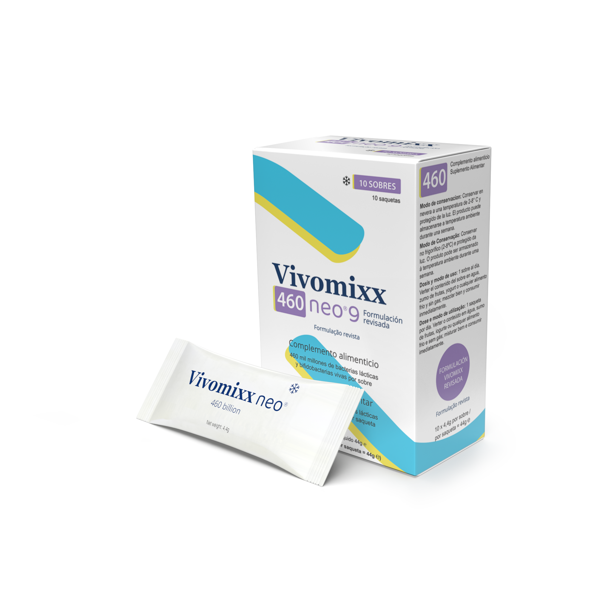
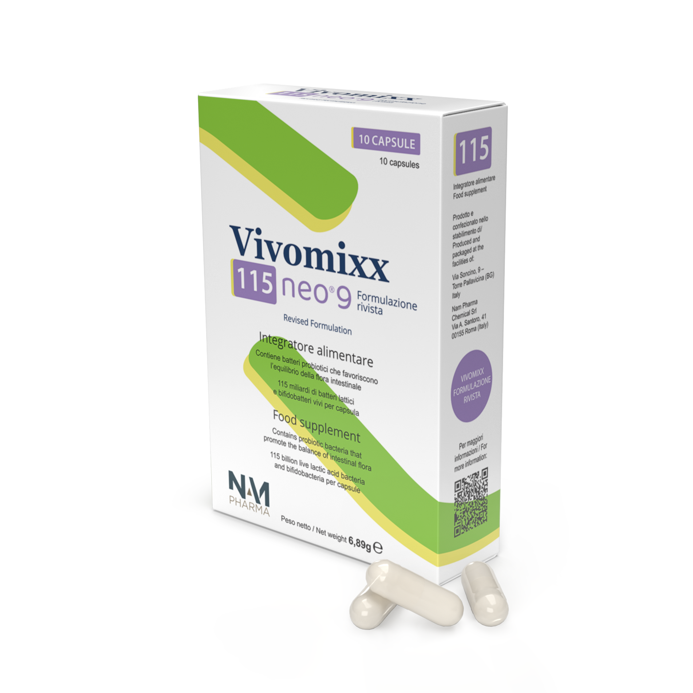

9 cepas vivas
Su fórmula incorpora 9 cepas bacterianas vivas, en una combinación de bacterias lácticas y bifidobacterias.
Vivomixx neo 9 combina 9 cepas vivas, alta concentración y conservación refrigerada para acompañar de forma responsable el equilibrio de la microbiota intestinal.
Disponible en presentaciones de 460 mil millones por sobre y 115 mil millones por cápsula.


Si estás buscando un probiótico de alta concentración con conservación refrigerada, ya puedes consultar disponibilidad local, puntos de venta e información comercial.
Vivomixx neo 9 es un suplemento alimenticio probiótico formulado con bacterias vivas en alta concentración y disponible en dos presentaciones comercializadas en Venezuela: sobres de 460 mil millones y cápsulas de 115 mil millones.
Su fórmula incorpora 9 cepas bacterianas vivas, en una combinación de bacterias lácticas y bifidobacterias.
Cada sobre aporta 460 mil millones de bacterias vivas y cada cápsula 115 mil millones.
Debe conservarse entre +2 °C y +8 °C para mantener las condiciones recomendadas del producto.
Puede formar parte de una rutina diaria según recomendación de uso y criterio profesional cuando aplique.
Información clave para quienes desean revisar mejor la composición del producto.
Elaborado sin organismos modificados genéticamente, según la información de marca.
La propuesta de Vivomixx neo se apoya en tres ideas claras: alta concentración, combinación multicepa y conservación refrigerada.
Presentaciones diseñadas para aportar una cantidad elevada de bacterias vivas por sobre o por cápsula.
Una fórmula multicepa que combina distintas bacterias lácticas y bifidobacterias dentro de un mismo producto.
La refrigeración forma parte de la identidad del producto y ayuda a comunicar el cuidado con el que debe conservarse.
Vivomixx neo contiene bacterias vivas, por eso la conservación recomendada entre +2 °C y +8 °C es parte importante del producto.
Esta condición ayuda a entender mejor su propuesta de valor: un probiótico que pone el foco en la viabilidad del contenido y en el cuidado del producto desde su almacenamiento hasta su uso.
Refuerza la idea de que no es solo un producto “digestivo” genérico, sino un probiótico con una propuesta más específica y técnicamente cuidada.
Cuidado en la conservación, atención al detalle y una lógica de uso alineada con la naturaleza viva del producto.
En Venezuela comercializamos sobres de 460 mil millones y cápsulas de 115 mil millones.
Mayor concentración por toma.
Más practicidad para el día a día.
Elige la opción que más se parezca a lo que estás buscando y te orientamos de forma general.
* Esta guía no sustituye la recomendación de un profesional de salud.
En lugar de un gráfico complejo, aquí puedes explorar cada cepa de manera clara. Haz clic sobre una cepa para ver una explicación breve.
Una combinación multicepa de bacterias lácticas y bifidobacterias.
La microbiota intestinal está formada por microorganismos que conviven en equilibrio dentro del organismo. Cuando las personas hablan de “cuidar la microbiota”, normalmente se refieren a apoyar ese equilibrio dentro de una rutina de bienestar digestivo.
Muchas personas se interesan en un probiótico porque buscan sentirse más acompañadas en etapas de sensibilidad digestiva, cambios de rutina, cambios de alimentación o después de ciertos tratamientos, siempre con lenguaje responsable y sin prometer curación.
Una alimentación variada aporta sustratos y nutrientes que influyen en la composición de la microbiota intestinal. La dieta es una de las formas más importantes de cuidar este ecosistema.
La forma de uso cambia según la presentación. Consulta siempre el empaque y la recomendación de un profesional de salud cuando sea necesario.
Testimonios de referencia para la web. Son testimonios comunicacionales y no sustituyen orientación médica.
“Empecé a usar Vivomixx después de una etapa en la que sentía mi digestión más sensible y mucha irregularidad intestinal. Lo que más me gustó fue poder incorporarlo fácilmente a mi rutina diaria. Con el tiempo, sentí que mi sistema digestivo estaba más equilibrado y que mi bienestar intestinal mejoraba. Para mí se ha convertido en un apoyo importante, especialmente en semanas de mucho estrés o cambios de alimentación.”
“Con frecuencia sentía pesadez, inflamación y molestias digestivas después de comer. Mi médico me recomendó cuidar más mi microbiota y probé Vivomixx como parte de ese cambio. Me ayudó a ser más constante con mi bienestar intestinal y a sentirme más cómodo en el día a día. Valoro mucho que sea un producto con una formulación clara y fácil de tomar.”
“Después de un tratamiento con antibióticos, sentía que mi digestión no volvía a estar como antes. Empecé a tomar Vivomixx siguiendo la recomendación de mi especialista y noté que me ayudó a recuperar una sensación de equilibrio. Me dio confianza saber que estaba apoyando mi microbiota con bacterias vivas en una concentración alta. Hoy lo uso cuando siento que mi sistema digestivo necesita un refuerzo.”
Esta sección ayuda a conectar con beneficios tangibles percibidos por el usuario, usando un lenguaje prudente.
Para personas que quieren acompañar su rutina con un producto orientado al equilibrio intestinal y sentirse más apoyadas en su día a día.
Etapas con viajes, estrés, comidas diferentes o desorden en los horarios, donde muchas personas buscan una rutina digestiva más consistente.
Algunas personas consultan por probióticos cuando quieren volver a sentir una mayor sensación de equilibrio intestinal tras determinados contextos o tratamientos, siempre con criterio profesional.
Si formas parte del entorno profesional o comercial y deseas conocer más sobre Vivomixx neo en Venezuela, podemos orientarte sobre disponibilidad, presencia local y posibilidades de contacto comercial.
Es un suplemento alimenticio probiótico de alta concentración con 9 cepas bacterianas vivas, disponible en sobres y cápsulas.
Hace referencia a la cantidad de bacterias vivas por presentación: 460 mil millones por sobre y 115 mil millones por cápsula.
Debe conservarse refrigerado entre +2 °C y +8 °C. Puede permanecer hasta una semana a temperatura ambiente, máximo +25 °C, evitando temperaturas elevadas.
Los sobres pueden disolverse en agua, bebida no carbonatada o alimento frío como yogur o compota. Las cápsulas pueden tomarse con agua o abrirse y mezclarse con agua o yogur.
Puede formar parte de una rutina diaria siguiendo la recomendación de uso del producto y el criterio de un profesional de salud cuando aplique.
Embarazadas, niños, personas con condiciones médicas, inmunosupresión o quienes estén usando otros tratamientos deberían consultar con un profesional de salud antes de usarlo.
Puedes revisar el Instagram oficial para conocer información actualizada sobre disponibilidad y puntos de venta. También estamos trabajando para ampliar la presencia del producto en más puntos del país.
Si te interesa trabajar con Vivomixx neo en Venezuela, escríbenos para recibir información comercial.
Email comercial: pendiente por confirmar